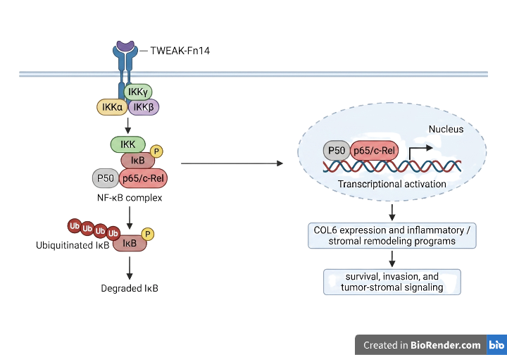

Biology & Research
Cancer biology exposure, molecular signaling, COL6 protein-expression analysis, antibody engineering concepts, and translational biology questions.
Biology research & data portfolio
I am Evan Kordovi, a B.S. Biology graduate from SDSU interested in cancer biology, antibody engineering, drug discovery, and translational research. This site gives employers a quick view of my research exposure, technical skills, resume, and current project direction.
About
I earned a B.S. in Biology from San Diego State University and have undergraduate research exposure through the House Lab, where I built familiarity with cancer biology, molecular signaling, pathway logic, and research communication.
My current interests include antibody engineering, oncology, drug discovery, and translational biology. I am also developing practical skills in Python, SQL, R, Excel, statistics, data organization, and scientific writing so I can contribute to research assistant, lab technician, biology data-support, and scientific communication roles.
Skills Snapshot
Cancer biology exposure, molecular signaling, COL6 protein-expression analysis, antibody engineering concepts, and translational biology questions.
Python, pandas, SQL, SQLite, R, Excel, statistics practice, spreadsheet cleanup, and analysis-ready table structure.
Literature review, pathway summaries, BioRender figure support, research statements, cover letters, and lab-fit writing.
RNA extraction, cDNA synthesis, qRT-PCR, BCA assays, SDS-PAGE, Western blotting, native PAGE, and SOP/GMP awareness.
Selected Work
These are early-career projects and writing samples. They are framed as evidence of preparation and communication, not as claims of senior research ownership.
House Lab research exposure
Undergraduate research exposure in the SDSU House Lab included molecular biology and protein-analysis workflows connected to ovarian cancer model conditions. I supported work involving RNA extraction, cDNA synthesis, qRT-PCR, BCA assays, SDS-PAGE, Western blotting, native PAGE, and COL6 protein-expression analysis.
Biology data analysis
Analyzed cleaned supplementary data from a CD19xCD3 BiTE droplet microfluidics screen to compare starting library composition against functional hits. Calculated enrichment ratios across orientation, linker type, CD3 scFv, and CD19 scFv variables.
Behavioral data analysis
Analyzed field observations comparing koi responses to a human hand and simulated predator stimulus. Calculated behavior proportions, visualized response patterns, and interpreted a non-significant chi-square result with appropriate limitations.
Workflow automation
Built a Google Apps Script workflow to turn Google Form product-intake responses into a Squarespace-ready CSV for a ceramics website. The workflow helps standardize product details, format descriptions, prepare shipping fields, and reduce repetitive manual entry before upload.
Database-backed workflow
Built a Flask and SQLite inventory app with CRUD workflows, category filtering, low-stock alerts, restock history, authentication, admin controls, and relational tables for inventory, users, restocks, and notes.
Antibody engineering exploration
Studied how antibody engineering can combine yeast display, directed evolution, AHEAD/OrthoRep concepts, FACS-based selection, and computational tools. This is a conceptual exploration of how antibody candidates can be improved across binding, specificity, expression, and developability.
Scientific writing
Developed research statements, cover letters, CV language, and lab-fit materials grounded in evidence, project relevance, and specific research interests. The work produced clearer application materials for research assistant, lab technician, and biology-focused roles.

The BioRender figure is supporting evidence, not the main project. The stronger signal is the House Lab research exposure behind it: molecular biology work, protein-expression analysis, pathway-focused reading, and practice explaining cancer biology concepts.
This is a conceptual map of an area I am studying, not a claim of direct platform experience. The focus is how experimental selection systems and computational tools can support antibody optimization.
Experience
Research
Data
Lab readiness
Communication
Contact
I am also interested in scientific communication roles where biology knowledge, writing, and organized research materials matter.